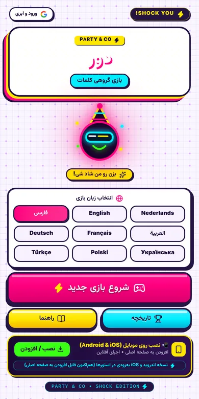
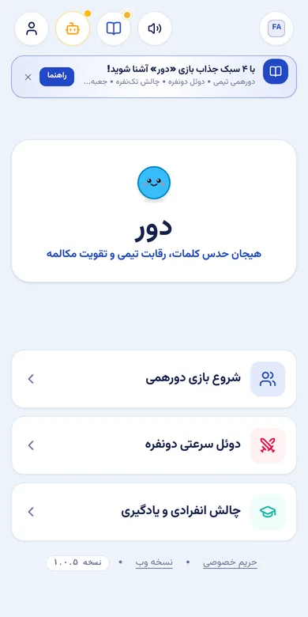

A party game that starts in ten seconds
How I designed Dour, a word-guessing game for one phone passed around a room, and then reused its core loop to make language practice feel like a game night.


The problem
Word-guessing card games are a staple of family evenings and parties, including in Iranian homes. But the box of cards is in one language, and most app versions assume everyone reads English, want an account and a connection, and fall apart the moment someone taps the wrong button mid-round.
How might we let any group start a round in seconds, in the language they actually speak at that table?
Constraints I designed for
- One device for everyone. Not everyone at a party will install an app; the host's phone has to be enough.
- Mixed tables. Different ages and languages in the same room.
- No reliable Wi-Fi. Gardens, trips, a relative's living room.
- Noise and excitement. People shout, grab the phone and tap the wrong thing. The game has to forgive that.
Decisions
How I built and tested it
I wrote the rules, screens and edge cases as a spec, built it with AI coding tools, and tested every release against my own ten-scenario checklist:
- Startup and first round
- Sound effects
- Word flow with no repeats
- Timer accuracy
- Turn handover
- Winner screen
- Mobile layout
- Pause and reset
- Install to home screen
- Offline play
Writing the checklist before the build meant every bug report pointed to a scenario, and the fix could be checked against the same scenario.
From game to learning product
Guessing a word from a teammate's description is exactly what a language learner needs to practise. So I rebuilt the loop as Dour: Language:
- Cards with real vocabulary and phrases, levelled by CEFR, A1 to C1.
- Up to four learning languages at once, so a mixed group can play together.
- Group, two-player duel and solo modes, with spaced review of mistakes.
- A freemium model where the free version keeps most features; I wrote the revenue model and the epics with user stories for it.
The next design problem is difficulty: I am specifying an adaptive-difficulty algorithm so that cards get harder or easier per player, keeping rounds close.
Result and what's next
Dour is live as an installable, offline web app in nine languages, and Dour: Language is live with three modes. Neither has real users yet. The next step is structured playtests with real groups, measuring:
- Rounds per session and how many groups play again within a week.
- How often undo is used, and on which screen: a sign of where taps go wrong.
- The round where players stop, to tune round length and difficulty.
What I'd do differently
I added nine languages before testing with a single group. Word lists of uneven quality in some languages are now a risk. Next time I would playtest in one or two languages until the core loop is proven, then expand.